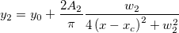
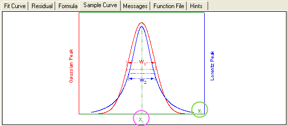

Nichtlineare Anpassung mit mehreren Variablen
Zusammenfassung
Origin unterstützt Anpassungsfunktionem mit mehreren abhängigen und
unabhängigen Variablen. Bei nichtlinearen Anpassungsfunktionen können
Sie mehrere Variablen definieren und sie mit Semikolons voneinander trennen.
Da eine globale Anpassung nur das Anpassen einer Funktion zur gleichen
Zeit zulässt, ist dies eine gute Möglichkeit, diese Einschränkung zu umgehen.
Origin wird mit drei Standardfunktionen mit abhängigen und unabhängigen
Variablen ausgeliefert. Diese Funktionen, die in der Kategorie Multiple
Variables zur Verfügung stehen, sind Zusammensetzungen, die aus zwei gewöhnlichen
Funktionen bestehen. Die Funktion GaussianLorentz ist beispielsweise eine
Kombination der Funktionen Gaussian und Lorentz, und teilen sich y0
und xc:

- 
Dieses Tutorial zeigt, wie Sie Funktionen mit mehreren Funktionen anpassen.
Was Sie lernen werden
- Verwenden von nichtlinearer Anpassung mit mehreren Variablen, um
eine Kurve mit zwei verschiedenen Funktionen anzupassen,
- Zuweisen von Daten an Anpassungsvariablen.
Schritte
- Öffnen Sie ein neues Projekt oder erstellen Sie eine neue Arbeitsmappe
und importieren Sie die Datendatei \samples\curve fitting\Gaussian.dat.
- Markieren Sie Spalte(A) und Spalte(B). Klicken Sie im Hauptmenü
auf Analyse, gehen Sie dann zu Anpassen und klicken Sie
dann auf Nichtlinearer Fit.
- Wählen Sie im Dialogfeld NLFit im linken Bedienfeld Funktionsauswahl.
Wählen Sie im rechten Bedienfeld Multiple Variables in der Auswahlliste
Kategorie. Wählen Sie in der Auswahlliste Funktion die Funktion GaussianLorentz.
Wie Sie auf der Registerkarte Beispielkurve sehen können, teilen die
Gleichungen in dieser Anpassungsfunktion die gleichen Parameter, y0
und xc.

- Wählen Sie im Dialogfeld NLFit im linken Bedienfeld Datenauswahl.
Erweitern Sie im rechten Bedienfeld den Knoten Bereich und weisen
Sie den Anpassungsvariablen Daten zu. In diesem Beispiel wurde Spalte
B beiden Parametern y1 und y2 zugewiesen. Das bedeutet,
dass beide Ausdrücke den gleichen Datensatz anpassen.
- Klicken Sie zum Anpassen auf Fit bis konvergiert und dann
auf OK. Vergleichen Sie im Ergebnisblatt die Parameter A und w,
wobei die Funktionen Gaussian und Lorentz den gleichen Versatz und das
gleiche Impulszentrum teilen.